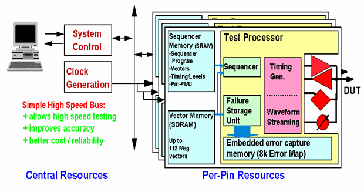
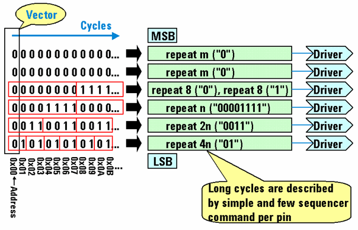

Test-processor-per-pin architecture
The test system has unique architecture with a test processor for each pin (see the figure below) that is optimized for the needs of high-speed memory testing. The memory test methodology of the test system uses the per-pin test processor as a per-pin APG (algorithmic pattern generator) for allowing the generation of memory test patterns on any pin with the full system speed and accuracy.

This concept supports the widest possible memory organizations as well as the most complex access formats and protocols needed for effectively testing embedded memories. Each pin has its own independent sequencer, which can perform loops, counted loops and subroutines, while other pins run a different sequencer program. Because the per-pin APG runs at full tester speed, memory tests can be executed at-speed to ensure full test coverage. Moreover, this architecture allows to interleave memory test patterns and logic test vectors in a single test without any breaks (in the case the pattern is executed as mere functional test).
This is in contrast to conventional memory tester architectures, which are based on a centralized hardware-APG with dedicated address (drive only) pins, dedicated data (drive and compare) pins, as well as some control (drive only) pins. Such shared resource memory ATE architectures include a wide high-speed system bus which distributes the common signals. The penalty, however, is that this introduces rather large inaccuracies limiting the data bandwidth and reducing the stability.
Thus, the superior capabilities of the test system over traditional memory tester architectures for testing the most complex high-speed embedded memories as well as high-speed standalone memories (DRAM, SRAM) can be summarized as follows:
- Per-pin APGs run at full test processor (sequencer) speed.
- Each digital tester channel can serve as a per-pin APG, and hence is available for memory tests (no data bus width limitation as for hardware-APG); thus, any pin can be used as address, data, or control pin.
- Per-pin APG employs per-pin sequencer programs (generated by firmware-commands); note that this is in contrast to ordinary test system sequencer programs which are always valid on all pins; pins which are not defined in the memory test are automatically filled up with repeat vectors, that is, break waveforms.
- The per-pin sequencer programs make use of a repeat language for highest vector compression
(which dramatically decreases allocated sequencer memory space).

- "On-the-fly" switch between logic, scan and memory tests without break cycles as required for embedded memory test if pattern is executed as functional test (for example, interleave of logic vectors and memory patterns for devices that have complex memory access mode setups).
- Support of multi-site testing.
- Easy setup of memory test patterns based on predefined industry-standard test patterns via APG user interface.
Functional changes
- Introduced before SmarTest 6.3.2
- SmarTest 7.0.3: Removed memory_analysis and redundancy_repair functions